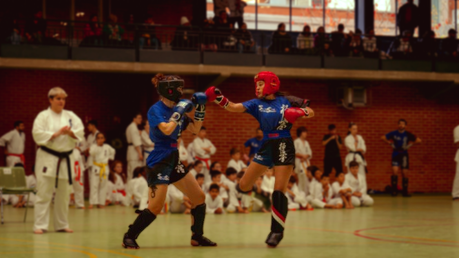
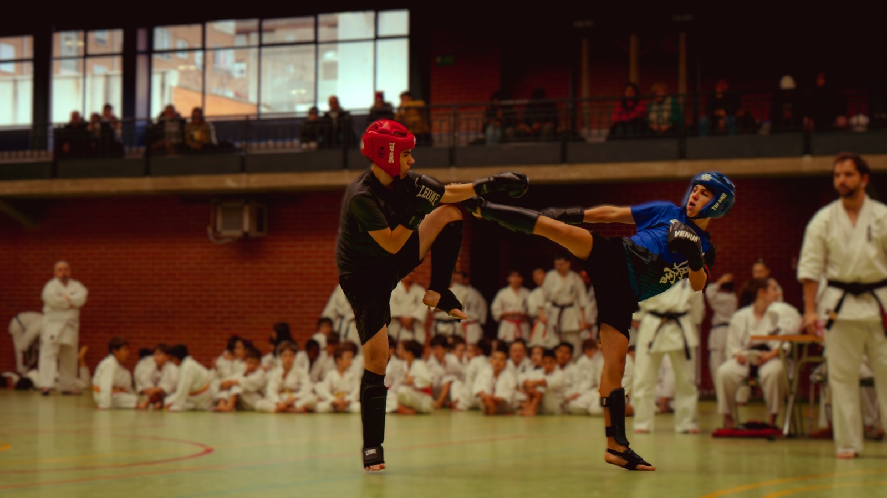

Kickboxing

El kickboxing es un deporte de combate que combina técnicas de puño del boxeo con patadas de artes marciales, dando lugar a un entrenamiento dinámico, completo y muy exigente. Nació como una disciplina moderna orientada tanto a la competición como al acondicionamiento físico, y hoy en día es una de las formas más populares de entrenamiento de contacto.
Su práctica mejora de forma notable la condición física general: aumenta la resistencia cardiovascular, la fuerza, la velocidad y la coordinación. Además, ayuda a desarrollar reflejos rápidos, agilidad y un gran control del cuerpo en movimiento.
Más allá del aspecto físico, el kickboxing es una excelente herramienta para reducir el estrés, aumentar la confianza personal y mejorar la disciplina mental. Enseña a mantener la concentración bajo presión, a gestionar la energía y a superar retos con determinación. Es, en definitiva, un deporte que fortalece tanto el cuerpo como la mente.
Modalidades de Kickboxing
Light Contact
Modalidad de combate continuo donde se prioriza la técnica, el control y la fluidez. Los golpes deben ejecutarse con precisión y control, sin buscar el KO, manteniendo siempre un ritmo constante. Se valora la combinación de técnicas, la movilidad y la capacidad de enlazar acciones de forma limpia, siendo ideal para desarrollar una base sólida y una buena condición física.
Point Fight
Combate a puntos en el que la acción se detiene cada vez que se marca una técnica clara. Es una modalidad muy rápida y explosiva, donde prima la velocidad de reacción, la precisión y la capacidad de anticiparse al rival. Requiere gran concentración, reflejos y una excelente lectura del combate
Kick Light
El Kick Light es una evolución del Light Contact en la que se incorporan las patadas a las piernas, aportando mayor realismo al combate. No se busca el K.O., sino puntuar mediante técnica, velocidad y control. Esto obliga al practicante a trabajar mejor las distancias, los bloqueos y la estrategia, en un combate continuo y dinámico. Es una modalidad muy completa, donde se combinan técnica, resistencia y táctica, desarrollando tanto la capacidad física como la inteligencia de combate.
K1 Light
Versión controlada del K1 que incluye una amplia variedad de técnicas como puños, patadas y rodillas (según normativa). Aunque no se busca el contacto pleno, es una modalidad más intensa y cercana al combate real. Se trabaja la potencia, la resistencia y la estrategia, manteniendo siempre el control y la seguridad.
Enfoque Competitivo
En Dojo Senshi, ofrecemos un enfoque integral para el entrenamiento de kickboxing, combinando técnicas de combate con acondicionamiento físico y desarrollo mental. Nuestros programas están diseñados para preparar a los atletas para competiciones locales e internacionales, fomentando un ambiente de respeto, disciplina y superación personal.

Nuestro Método de Entrenamiento
Preparación física
En el Dojo Senshi, la base del rendimiento es una preparación física completa y progresiva. A través de entrenamientos variados e intensos, se desarrollan la resistencia, la fuerza, la velocidad y la coordinación, construyendo un cuerpo ágil, fuerte y preparado para el esfuerzo del combate.
Técnica y táctica
El trabajo técnico es preciso y constante, enfocándose en la correcta ejecución de golpes, patadas y defensas. A ello se suma la táctica, donde el alumno aprende a leer al oponente, controlar la distancia y tomar decisiones eficaces en cada momento del combate, uniendo técnica e inteligencia en acción.
Fortaleza mental
La mente es una parte esencial del entrenamiento en el Dojo Senshi. Se fomenta la disciplina, la concentración y la resiliencia, enseñando a mantener la calma bajo presión y a superar los propios límites. El objetivo es formar no solo luchadores, sino personas seguras, constantes y con una gran capacidad de superación.